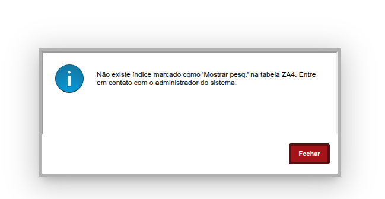

Índice sem “Mostrar Pesq.”
Não existe índice marcado como 'Mostrar pesq.' na tabela ZA4. Entre em contato com o administrador do sistema.

Como resolver
- No Configurador, abra Dicionário de dados.
- Selecione a tabela informada no erro (ZA4 neste exemplo).
- Selecione Índices.
- Selecione o índice da filial.
- Marque a caixa Mostrar Pesq..
- Salve e atualize o banco de dados.